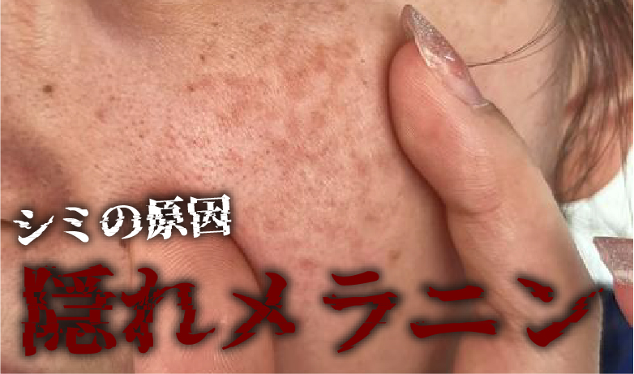
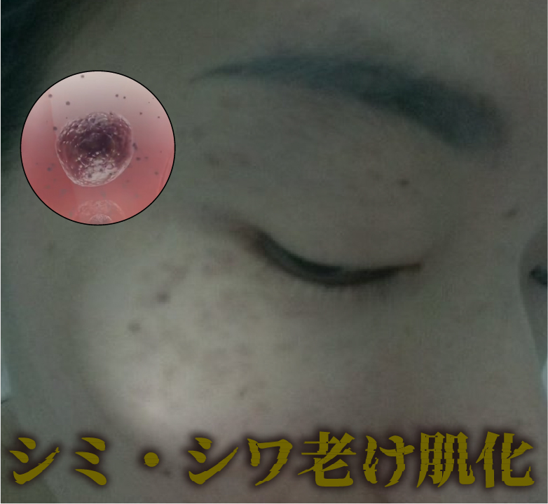
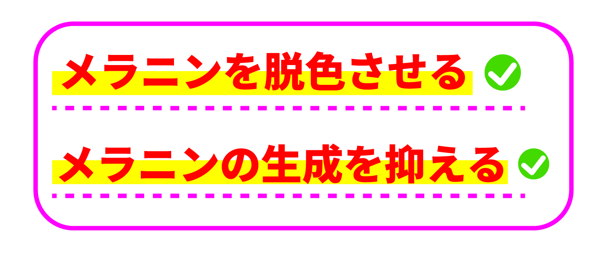
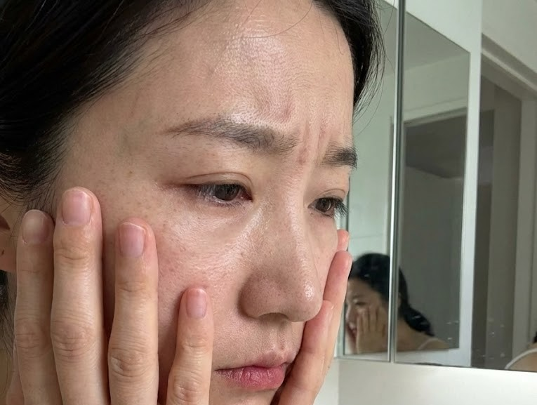
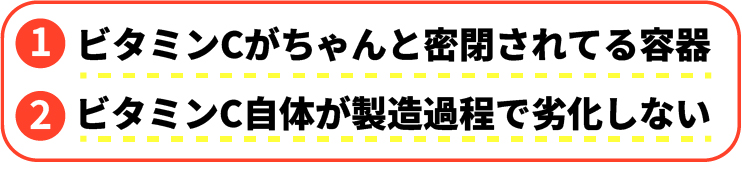

「 隠れメラニン 」
が原因なんです...!

隠れメラニンは
紫外線を浴びた後
肌の奥底でどんどん増加
そのまま放置してると
ターンオーバーによって
どんどん肌の表面へ上がっていき
シミやシワが目立つ老け肌に！

この隠れメラニンを取り除くには
ビタミンＣが最も有効！

効果があるから
上手に接種できれば
シミ一つない美肌に！
なのですが
実はビタミンC は
非常に劣化しやすいという性質が...
ビタミンCは少しでも空気に触れると
即、崩壊
普通の化粧品は
ビタミンCを
多く含んでると"自称"していますが
実は製造過程で
ビタミンCが空気に露出

ビタミンCの
多くが壊れちゃってるんです
しかも
普通の容器は
全く密閉されていないから
ビタミンCが空気に触れて
壊れ放題
ビタミンC含有と書いてあるはずなのに
肌には全然浸透してないのが現実

だから
ビタミンCを肌の奥底に届けたいなら

この2つを満たす化粧品がマスト
それがこちら
フルーシー
LDK5冠達成
楽天3冠達成達成の
日本初
無菌密封ビタミンC
国がシミ予防効果を
公式に認めた
医薬部外品
皮膚科医も推薦する
特殊カプセル構造を実現

だから
染み抜き効果はバツグン！